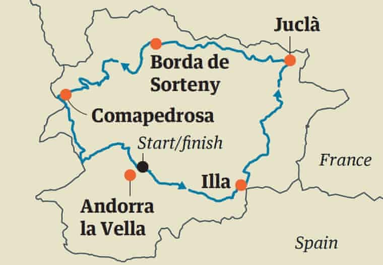
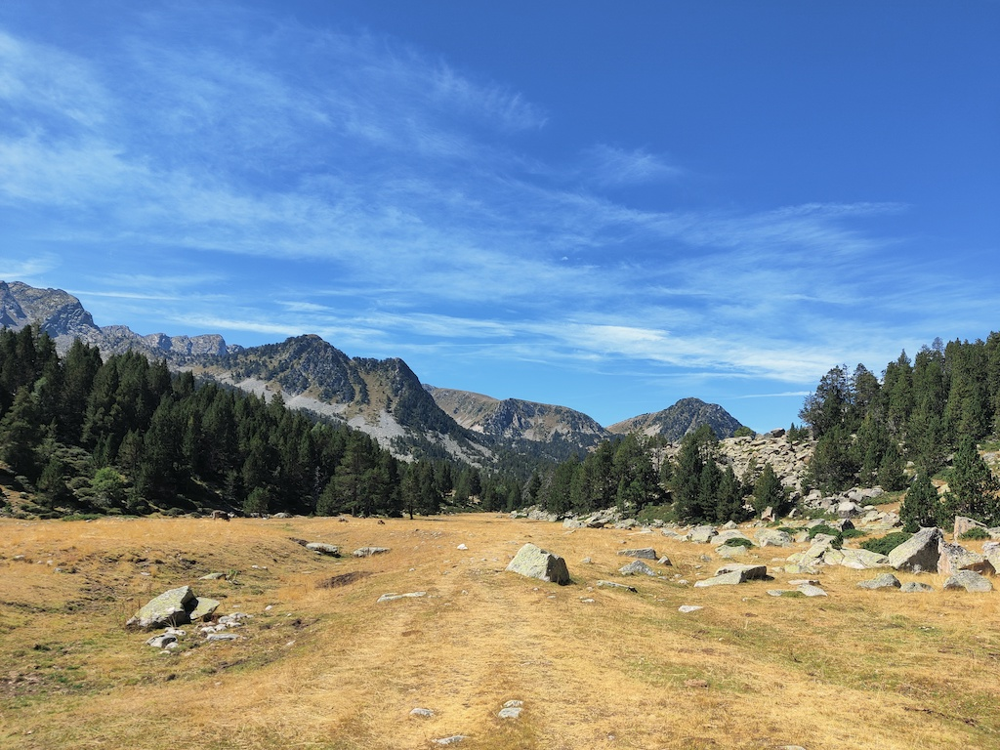

Hiking around Andorra in 5 days
About a month ago I ticked off the top item on my "European Countries I'd Still Like To Visit" list: Andorra.
The little mountainous country squeezed between Spain and France was staring at me every time I opened a map of Europe, so when a work trip took me back to the Iberian Peninsula, I wasn't going to waste the opportunity.
Having wrapped up the work week in Portugal, I packed my bags and set off for Andorra, with the goal of walking around it in 5 days.
Here's how that went.
The Trail
While reading up on Andorra online, I stumbled upon a trail called Coronallacs.
Coronallacs is a new trail (2017) that goes around the 4 existing staffed shelters in Andorra. These are aptly placed in the "corners" of the country, meaning if you visit all of them, starting and finish around Andorra la Vella, you essentially complete a loop around Andorra (somewhat).

Most - if not all - of trails connecting the shelters are not new. A variety of routes pass by them, most notably some GRs, the HRP (a crossing of the Pyrenees from the Atlantic to the Mediterranean), and the GRP (a longer loop around Andorra).
However, the particular combination of paths that make up the Coronallacs has only been listed as its own trail for fewer than 5 years, and, from the information provided to me by the tourist office, the number of people who have completed the trail is still in the three digits.
The trail is listed at a length of 92km, a number that isn't particularly impressive for a 5-day journey.
However, the key number for the trail is 6,868. 6,868m is the total altitude gain and loss over the trail, which people online will point out is the equivalent (only on paper :D) of ascending (and descending) Aconcagua from sea level.
Planning
Compared to a lot of other trails, there's a good amount of information about the Coronallacs online.
That is, an official website for the trail exists (coronallacs.com), providing a good idea of what to expect, but beyond that it's hard to really be certain of the details. That's partly why I wanted to write this article.
I planned to do the entire trail alone, so I wanted to get a better sense of what was ahead of me than the information I could find online.
I spent some time at the tourism office going over some of my questions, but as I'd later find out, you need to take any information gathered there with a pinch of salt.
Given I was setting out to walk alone in the Pyrenees for 5 days, I wanted to make sure I kept some people updated about my whereabouts. I bought an Andorran SIM card, and asked the guy at the tourist office if I'd find cell reception at all the shelters. I would have been fine with a "no", but he confidently asserted that this was indeed the case, no problem.
This led me to promise my family I'd send a checkpoint every evening, which turned out to be a minor hassle.
Two people also told me they were informed the trail would not pass by any villages, going entirely through the mountains. This is blatantly incorrect, but a quick glance at a map would debunk this. Basic rule: always look at a map of your route before setting off.
Speaking of maps, my best friend throughout the trip was a 1:50000 map of Andorra I bought from the tourist office. I spent quite a bit of time familiarizing myself with the trail on the days leading up to it, as well as constantly referred to it on a daily basis.
This proved very valuable, since I was able to make decisions like carrying less water with me on specific days, as well as was able to help a man safely exit the trail, given he was unaware of any "exit routes".
I had a few days in Andorra before starting the trail, and mostly used those to handle the logistics of the trip.
Here go a few tips if you're interested.
Storage
I came to Andorra from a work trip, so I had a bunch of things with me that I certainly wasn't going to take up to the mountains.
The bus station has some lockers, but I opted for using GuardaTot. There are a few locations in Escaldes and Andorra la Vella, making it pretty convenient to access.
It was slightly annoying to set this up, given they are geared towards longer-term storage, so I had a lot of back-and-forth with their agents on WhatsApp. They did generally answer pretty quickly though.
I had to put up a 50 euro deposit, but ultimately my total bill for a week came out to 6 euros, and I felt very safe leaving my stuff in their storage area.
Just note that if you don't have an Andorran bank account, they can only refund you the deposit in cash. This is generally done at one specific office, but they were nice enough to actually leave an envelope with the cash inside my storage box so I didn't have to go all the way to the office.
Mobile data
Very few international companies include Andorra in their roaming-exempt list. As a result, I saw people hit with massive bills for just a few minutes using their data plan from other European countries just to call someone.
After a bit of research, I decided to just buy a local SIM. This set me back 19 euros but was completely worth it.
I managed to use it on the trail, and it was of course very useful in the city. I was also made quite a lot of calls to places like the GuardaTot office (see the "Storage" section), the hotel, the tourist office, and pharmacies (to book a COVID test), so this was no-brainer to me.
Andorra only has one telecom provider, and that's Andorra Telecom. You should go to one of their stores to get a SIM card - unlike some other countries, convenience stores won't sell pre-paid SIMs.
Day 1
Listed specs
- Length: 12.6km
- Altitude difference: 1.473/-40 m
- Duration: 6 h and 38 m
- Difficulty: Medium
From my perspective, Day 1 was "a walk in the park", quite literally.
During this walk through the Vall del Madriu-Perafita-Claror national park, the weather was great (not too cold, not too warm), the path was well-marked, and the views were spectacular.
I found myself going at a very fast pace early on and kept telling myself to slow down and save my knees for the days to come. With the weather as it was, there wasn't a lot of rush to arrive.
Despite really forcing myself to go slower, I completed this stage in around 5h, much faster than the listed duration of almost 7h. This was not an indication of how things would go in the following days, however.
Note: Do not let this fool you! Stage 1 is still a 1,500m ascent with a 5-day backpack. You should never take trails like these lightly.
I set off on this trip by myself, and didn't bump into anyone going up during this stage. I only crossed paths with a few people who were coming down from having spent the night at the I'lla shelter.
It was a mostly lonely walk, with the exception of some cows and horses. The absolute highlight was a valley I reached after walking for around 3h. The sun was shining, some horses were hanging around, and the river provided a nice opportunity to freshen up.

The first night is spent at Refugi de l'Illa, a reasonably modern shelter at located at an altitude of 2,488m. The refuge sits just under a dam, and I highly recommend going up to the lake for a dip.
It's worth noting that there's no internet access here - not for you at least. I had no cell reception via Andorra Telecom SIM card, and there was no Wi-Fi available.
The only reason this mattered for me was that, as I mentioned earlier, having been told I'd have cell reception at every shelter, I promised my family to "check-in" every evening.
However, the people working at the shelter did have an internet connection, so they offered to send an email on my behalf.
Dinner here was simple but tasty and with large portions. Wine was also served with the meal.
As for the rest of the facilities, you can take a warm shower here, but you need to buy tokens that are worth for a minute each. Bunks have a mat, but no blankets or pillows were provided. Apparently shelters do offer these, but stopped doing so during the pandemic.
Blankets or not, you should probably always carry a sleeping bag with you, which would allow you to do an emergency bivouac if necessary.
The shelter was quite empty, and the seven of us had dinner together. A German and a Spaniard were doing a 30+ day trail, whereas the others (2 Brazilians, 2 Basques) were also doing the Coronallacs. One Brazilian had already decided to quit, and the rest of us decided to start the next stage together.
Day 2
The Brazilian who had "quit" woke up feeling fresh and decided to set off with us.
Thus, after having a good breakfast, the five of us set off for stage 2 at around 8am.